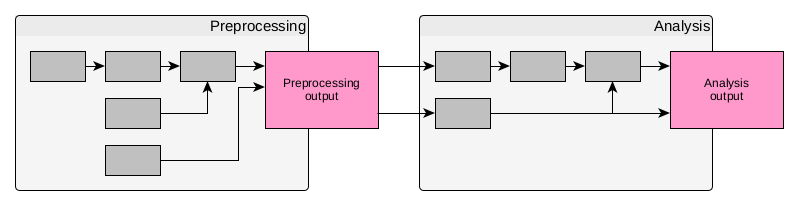
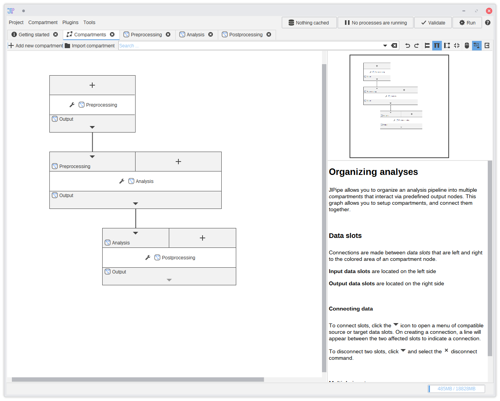

Graph compartments
A common issue with graphical programming languages is that large graphs are hard to navigate. JIPipe solves this issue by separating the pipeline graph into sub-graphs. Each sub-graph has a predetermined output node that is visible to other compartments. Other nodes on the other hand are not visible to other compartments.

The difference between compartments and simple node groups is that compartments only communicate with each other via the compartment output node. JIPipe also only allows you to edit a specific compartment, instead of the whole graph. By default, JIPipe creates three compartments: Preprocessing, Analysis, and Postprocessing.
By default a compartment's output node is not visible in any other compartment. The have to be connected in a similar manner on how algorithms are connected. To do this, use the compartment editor that is described in the following section.
You can ignore the compartment feature if you want. You can delete the default compartments without any issue. Just leave one graph compartment and edit the remaining one.
Compartments behave similar to algorithms. This means you can create a directed acyclic graph of compartments.
Creating and connecting compartments
JIPipe comes with an editor that allows to control the graph compartments. This editor is similar to the pipeline editor and allows you to create new compartments, connect them, as well as import or export compartments. Instead of containg algorithms, the editor contains graph compartment nodes that can be connected similar to how algorithms are connected.

You can one or multiple compartments in the editor. Click the Edit button to open the compartment in the pipeline editor.
You can also double-click a compartment node to open the editor.